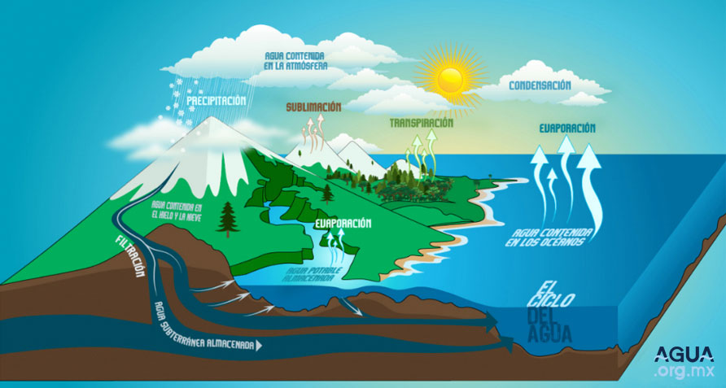
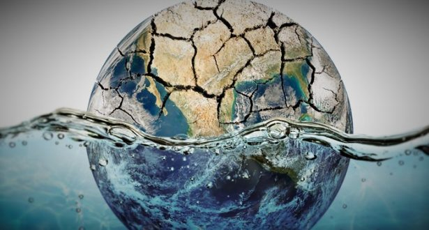

¿QUE ES EL AGUA? "ESENCIAL PARA SUBSISTIR"

El agua es un compuesto que se forma a partir de la union, mediante enlaces covalentes, de dos atomos de hidrogeno y uno de oxigeno; su formula molecular es H2O y se trata de una molecula muy estable. En la estructura de la molecula los dos atomos de hidrogeno y el de oxígeno estan dispuestos en un angulo de 105°, lo cual le confiere caracteristicas relevantes. Es una molecula dipolar – en la que el atomo de oxigeno central comparte un par de electrones con cada uno de los dos atomos de hidrogeno – con un exceso de carga negativa junto al oxigeno, compensada por otra positiva repartida entre los dos atomos de hidrogeno.
PROPIEDADES:
- Este liquido tiene densidad, que es la relacion de la masa entre el volumen. De ahi que un kilo de agua ocupa el volumen de un litro.
- Al igual que el aire, el agua tiene una fuerza con la que empuja, esto se llama presion.
- El agua por si misma no posee una forma definida, por eso es que toma la forma del recipiente que la contiene.
- La temperatura y la presion atmosferica determinan los diferentes estados del agua. Asi, a una temperatura de 0° C se produce la congelacion y el agua se convierte el hielo. En cambio, a una temperatura de 100° C, el liquido se transforma en vapor, este proceso se llama ebullicion.
- Dependiendo de la temperatura y la presion, el agua cambia muy facilmente de un estado al otro. Puede aparecer como un liquido que fluye, o un gas que sube por la atmosfera o un solido quieto guardado en el refrigerador.

BENEFICIOS DEL AGUA:
El agua es uno de los componentes mas importantes en todos los seres vivos. Es el elemento mas abundante de nuestro cuerpo y esta involucrada en varias funciones de vitales para nuestro organismo, sin ella nuestro cuerpo no funcionaria adecuadamente.
En el agua estan disueltas casi todas las sustancias que forman y nutren a nuestro cuerpo, por esto se le conoce como el solvente universal; tambien permite el transporte de todos los nutrimentos, remueve los materiales de desecho y participa en todas las reacciones que se llevan a cabo para producir energia; ademas, mantiene constante la temperatura de nuestro cuerpo, independientemente de la que exista en el ambiente.
Cuando hace mucho calor o hacemos un ejercicio intenso se pierde una cantidad excesiva de agua provocando un desequilibrio en este control; por esta razon debemos tomar mas liquidos de lo habitual para compensar la perdida adicional que se produce a traves de la respiracion agitada y el sudor que provocan el ejercicio y el calor.
VIDEO DE APOYO